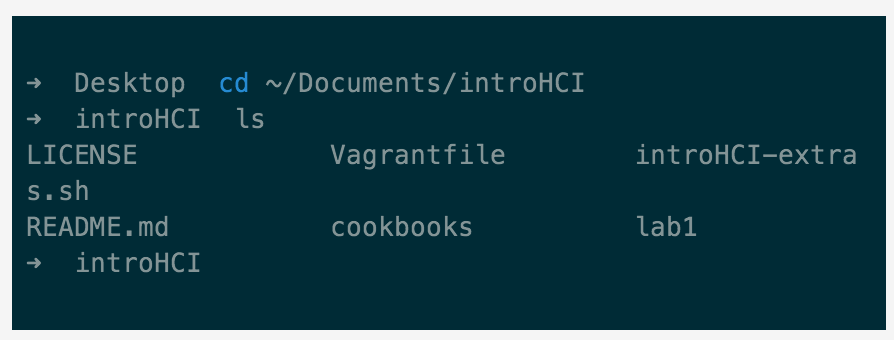
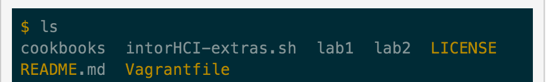

Before going through the troubleshooting pointers make sure you are in introHCI directory using your terminal.
Type ls and you should see the following:

If you do not see all the files shown in the image above this means you did not setup introHCI directory correctly. Go back to Lab1 and read carefully Slide 12.
Make sure your lab1 and lab2 folders are inside the introHCI directory. It should look like the following:

Now we are ready to troubleshoot Lab2
- If you're having trouble with vagrant run the following commands in the introHCI directory (i.e. introHCI). Example of error: connection closed by remote host
- vagrant reload
- vagrant ssh
- If you succeed in the previous two steps, type cd lab2
- If you get Heroku: command not found in your terminal
- First, make sure you have gone through Step 1 (above)
- Type heroku login, if you still get command not found. Type the entire line below:
- wget -qO- https://toolbelt.heroku.com/install-ubuntu.sh | sh
- If this comments returns immediately this means you are not connected to internet in your vagrant environment. Refer to Step 1.
- After typing heroku login you get errors similar to StackError
- Type in your terminal ping google.com. If you do not get a quick response this means your virtual machine cannot connect to the world. Go back to Step 1.
- If you do get a response then follow Step 2